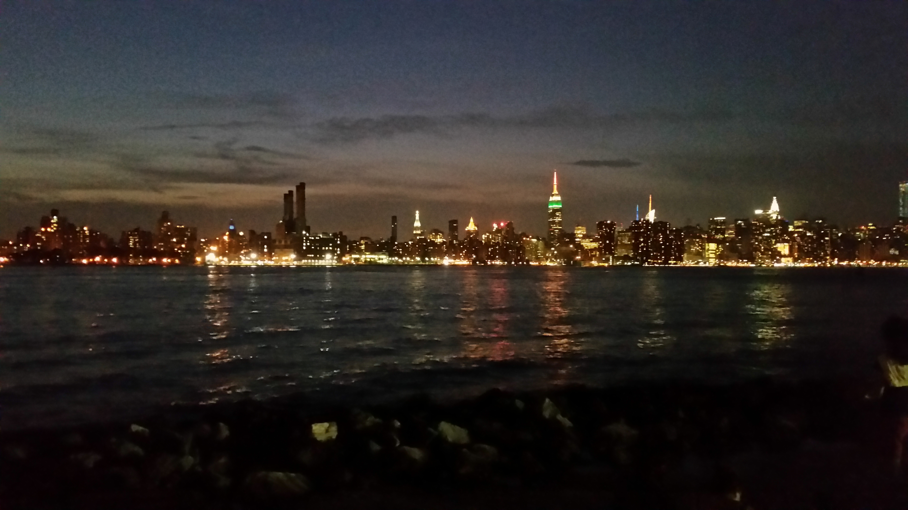

HELLO EVERYONE

My name is Eduardo Pantaleon. I was born and raised in Brooklyn, NY but I recently moved to Maspeth, Queens. I work in construcion and although I have learned many useful skills and its a great job, I would ultimately want to be in a field where i can work with either music or computers.
I am currently studying at BMCC. I am a MMP(multi-media programming) major. Although its just the beginning I believe this class has helped me on my decision to what I want to get my bachelors degree in. I am really enjoying learning to write code and it seems to be really straight foward. Before changing my major to MMP, I wanted to go to 5 Towns College for music production. That changed when i took my first MMP class and now im focused on seeing this path through.
When I have the opportunity to travel somewhere new, I take it. I love being on the road. You can check some of the photos from my recent trips. There are still many places I want to travel to like Vegas, California, Hawaii, Colorado, Europe, Asia and much much more. As I travel to these new locations I will put up pictures of those beautiful areas.

As a gamer, i like to be informed of the latest games as well as upcoming ones. IGN is a great website that keeps me on top of things. Not only does it keep you up to date with video games but with tv shows and movie trailers as well. There are forums in which you can discudd a topic or where you can give your reviews about a certain genre.
I like this site design although it might look simple it has a ton of components on the home page alone. You have slide shows, pictures with links for the whole story, videos, lists and charts on the side, the navigation bar on top which lets you login if you have an account, it has a search bar and browser which is a drop list.